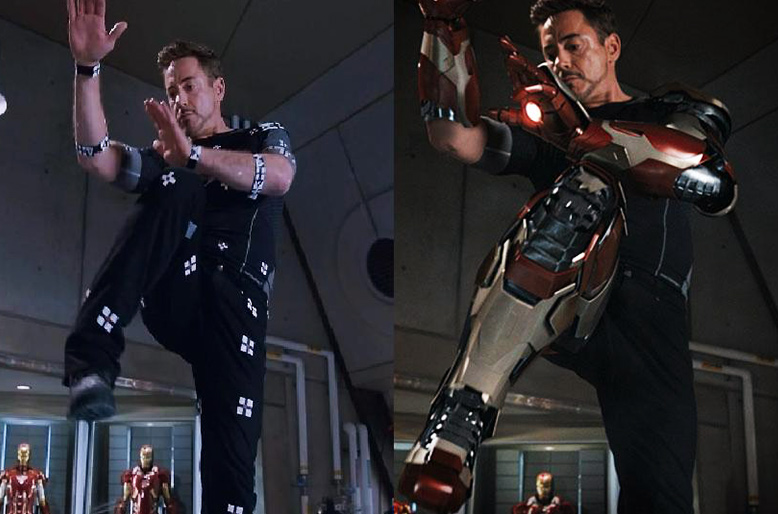
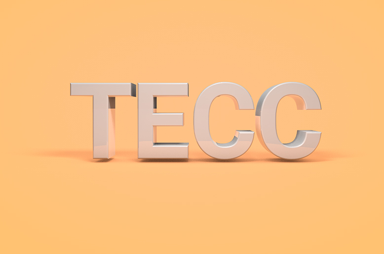
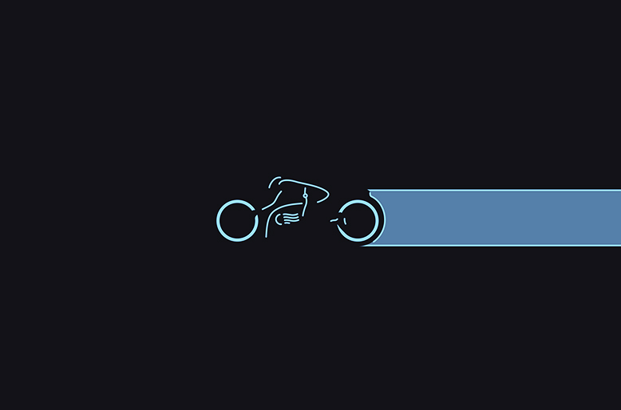

In this world, our senses drive our actions. What we see, hear and feel effects our thinking and ultimately our life, the importance of this can only be understood by a person who is blind or deaf. If this is what it takes to make an impact on what a person thinks or feels then how about having the same impact on a billion people?
Creative skills are therefore a great tool for you to give your message to the world in a way which is impactful.
Creative Skills include:
- Video Editing // Movie Making
- Audio Editing
- Photo/Image Editing
- Flash Animation
- 3D Modelling/Geometry
- Designing (logos, illustrations etc.)
I will explain each of them later in the article, Have a look at an example featuring all of them:
Adidas Commercial - Predator Instinct
You might have seen this commercial before, it covers all the aspects of Creative Skills - Audio/Video, Imagery, 3D, Designs... In fact most of the great movies you see make use of these skills (on a very large scale) - Every Marvel Cinematic Universe Movie, Transformers Series, Harry Potter Series, Avatar and many more.
The Point
Creative Skills:
- Video Editing // Movie Making
- Audio Editing
- Photo/Image Editing
- Flash Animation
- 3D Modelling/Geometry
- Designing(logos, illustrations etc.)
Here at TECC we will teach you any one of these fields or you can improve on them if you already know them.
Through this vacation and the following month we'll be sending you links to resources (articles, videos etc.), you can read and watch them to get an introduction to the field you choose, we'll make sure that all the resources which we will provide you with are beginner-friendly and correct.
This effort will be just to provide you with the basic/introductory knowledge of the field you have chosen, we'll teach you in detail the practical knowledge and skills that you really need to create something and during competitions.
Learn
Here are the details of every field under Creative Skills:
1. Video Editing or Movie Making or Motion Graphics

The Visual Effects are composed using industry-grade softwares like Adobe After Effects - Compositing Software.
Movies, Music Videos, Documentaries, Animations etc. are all videos, we will teach you how to make/record and edit them.
Don't get too excited even this thing has got sub-parts under it, like:
- General editing - cutting videos and color corrections etc.
- Making Motion Graphics (Animated Videos).
- Visual Effects
Software being used: Adobe Premier Pro, Adobe After Effects, Sony Vegas Pro and Windows Movie Maker (for amateurs).
DON'T GO OUT AND BUY THESE SOFTWARE, you can see what they do on the internet.
2. Audio Editing or Making
All the functionality of a professional studio can be found in these softwares, you can make your own music once you're done learning these softwares.
Every music you have ever heard were made/edited/polished using these types of software, you can make your own music in these software using your skills (like Hardwell, Martin Garrix, DJ Snake etc.)
Software being used: FL Studio, Audacity (free) and Adobe Audition.
DON'T GO OUT AND BUY THESE SOFTWARE, you can see what they do on the internet.
3. Photo/Image Editing
Celebrating Adobe Photoshop's 25th Anniversary.
You can make yourself look thinner or the other way around, color corrections and a whole lot of things to do. All popular magazines, photo books and photographers fall under and use this field, who knows you might open your studio one day.
Software(s) being used: Adobe Photoshop.
DON'T GO OUT AND BUY THESE SOFTWARE, you can see what they do on the internet.
4. Flash Animation
All 2D Cartoons have been made using some or other version/form of Flash Animation.
Now we'll do a lot of animation while doing Video Editing, but for some of us who have a bit of a cartoony side this is the thing you're looking for, All cartoons (except the 3D ones) you see are made using Flash.
We'll also be adding to this - Console Game Programming, if you have played online games on the internet - like on Cartoon Network's website or Farmville on Facebook, those are made using Flash Professional and a bit (actually a lot) of Javascript.
Software being used: Adobe Flash Professional and Macromedia Flash.
DON'T GO OUT AND BUY THESE SOFTWARE, you can see what they do on the internet.
5. 3D Modelling or Geometry or Animation

From stunning visual effects to your favourite animation movies its all 3D.
It is cool to use 2D for making cartoons etc. but the modern world demands something more realistic - 3D. From Ironman's suit to Hulk it's all 3D. In fact all movies with Visual Effects use 3D, also animation movies like Toy Story, Kung Fu Panda etc. are made using these 3D software, Object Visualization like architecture, cars and gadgets etc. are also be made in these software.
We'll teach you how to model (create) and animate all sorts of 3D Geometry/Models, you can even create your own 3D game after this with a bit of other stuff.
Software being used: Autodesk Maya, Cinema 4D, Blender, 3DS Max and Sketch Up (for amateurs).
DON'T GO OUT AND BUY THESE SOFTWARE, you can see what they do on the internet.
6. Designing (logos, illustrations etc.)

A simple yet elegant design can show a complex idea efficiently.
This is the backbone of most of the other fields like Web Designing, Motion Graphics, Image Editing, 3D etc. From logos to the beautiful illustrations or websites you see, all of them are designed in these software, also your cartoon characters are designed in here.
We'll give you a brief head start on this and soon you'll be able to create a logo for a big startup or just design your own T-Shirt.
Software being used: Adobe Illustrator.
DON'T GO OUT AND BUY THESE SOFTWARE, you can see what they do on the internet.
Which one to choose?
When you have a variety of things to do it becomes difficult to choose which one to do.
When you have a variety of things to do it becomes difficult to choose which one to do.
Fortunately all these fields are related to each other, you need an audio for a video and 3D Animations or Models most of the times end up in a video or it ends up as an image which you can further edit, design is also used in other fields like making a flash animation etc. But am I not confusing you more?
- Video Editing // Movie Making
- Audio Editing
- Photo/Image Editing
- Flash Animation
- 3D Modelling/Geometry
- Designing (logos, illustrations etc.)
I advise you start with something you admire the most, is it 3D or audio or anything in the list above; YOU DECIDE.
We'll be sending you links through email or post huge articles like these on our updates/blog page, to help you out in learning or getting the basics of the Creative Skill you want to learn.
If you have any doubts/queries/questions or want to understand any of this better or anything please mail it to Shashank Sengar(shashankx40@gmail.com), please feel free to contact me.
Article by Shashank Sengar. Photographs by Just Googled them, don't throw any copyrights on me, some of them are modified and made by me.